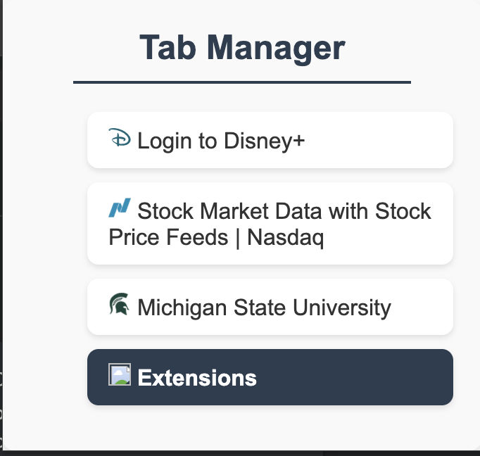
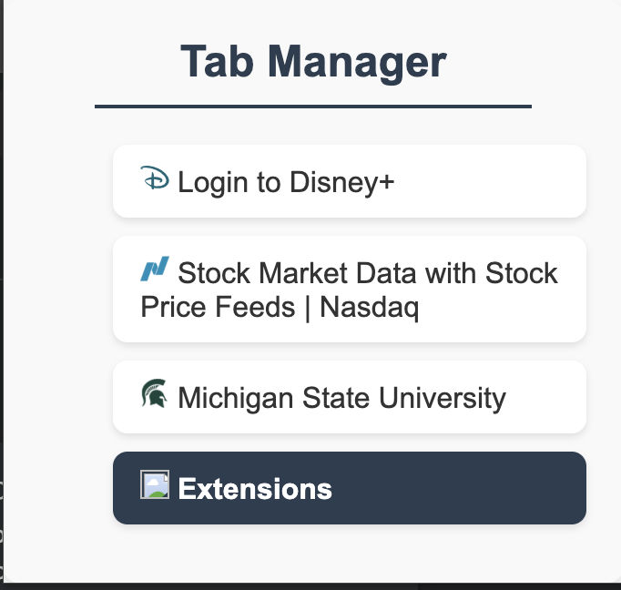

Tab's Manager
The Tab Manager Chrome Extension is a lightweight and intuitive tool designed to enhance browser productivity by providing users with a streamlined way to view, manage, and interact with open browser tabs. This project demonstrates proficiency in web technologies, Chrome Extension APIs, and dynamic DOM manipulation to create a seamless and interactive user experience.
The extension has interactive contrl where a single click changes the current tab and double click closes the chosen tab.
Technology Stack
- Language: C++
- Framework: WxWidget
- Version Control: Git
- Design Principles: OOP Concepts